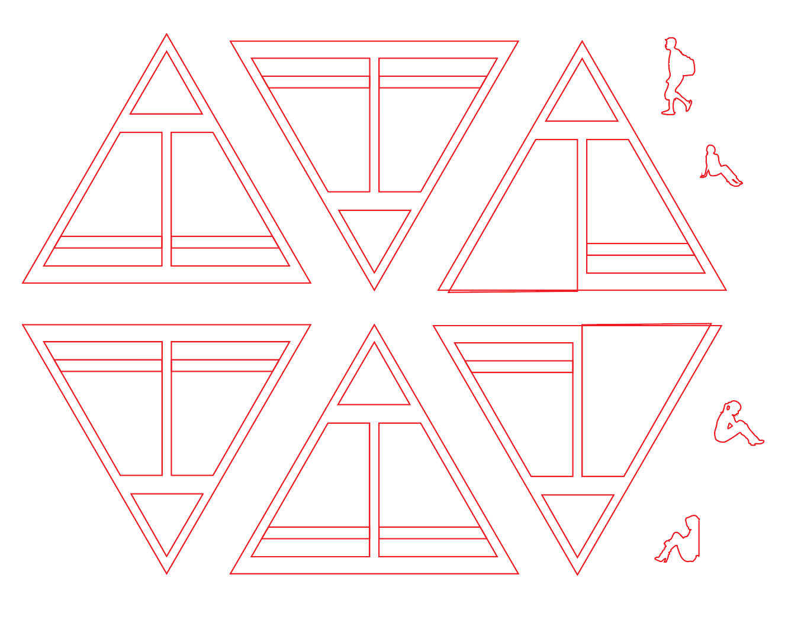

3D Intervention

In the 3D Intervention project the main focus was to solve a problem with a three-dimmensional solution. The problem that I chose to solve was the lack of group seating in Evans Way Park, a nearby area where local college students and high school kids like to hangout. With the use of a laser cutter I was able to create a funtional and sculptural answer.
